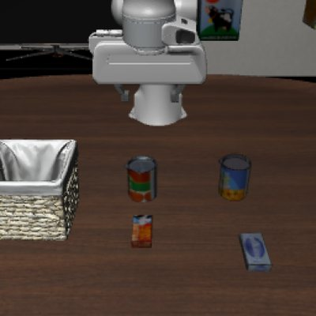
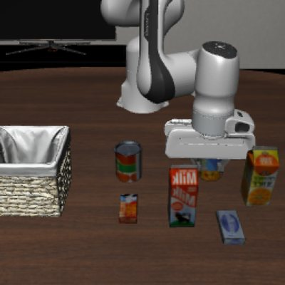
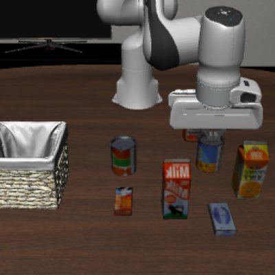
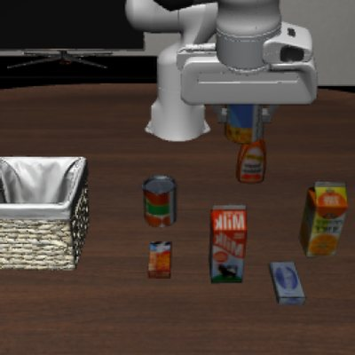
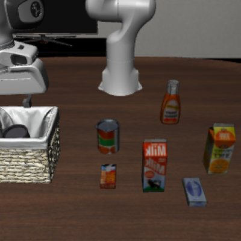
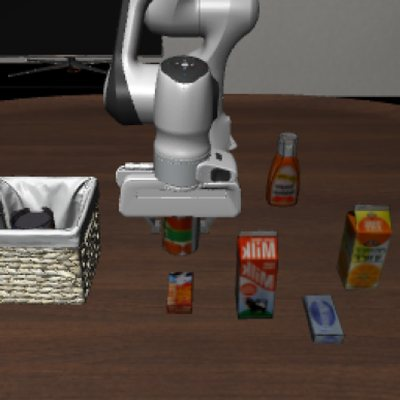
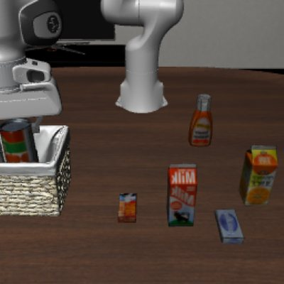
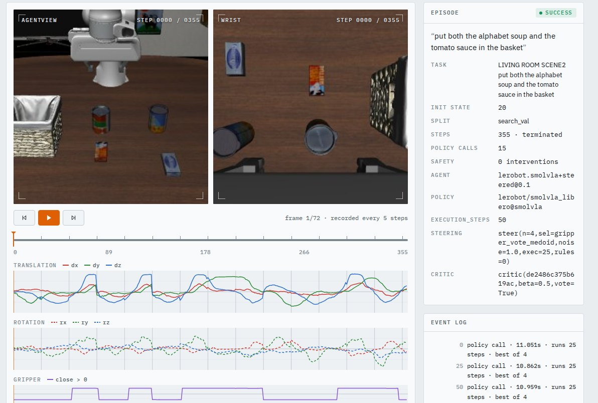
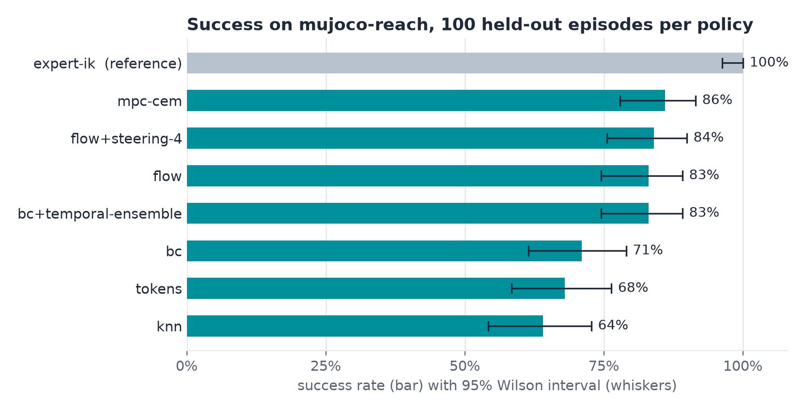

The Stack for Physical AI
From real-time running to cognition, evaluation and evolution, Hylo builds every layer of physical AI on one execution kernel.







step 0SmolVLA · LIBERO-10
“Put both the alphabet soup and the tomato sauce in the basket.”
Task complete in 355 steps
The Hylo Stack
Six layers, top to bottom, all built on one execution kernel.
Evolution
Turn experience into stronger versions, each one tested before release.
Hylo at work
Three separate examples, each from its own recorded runs.
Example 01 · LIBERO-10 simulation
Two objects, one basket
A SmolVLA agent puts the alphabet soup and the tomato sauce in the basket. Studio replays the run with both cameras, every action and every model call.
355 stepsTask complete
See Studio ↗
Example 02 · MuJoCo reach simulation
Eight policies, one standard
Eight reference policies, trained through the same pipeline, each evaluated on the same 100 held-out episodes.
8 × 100Policies × episodes, with 95% intervals
See the leaderboard ↗
Example 03 · MuJoCo reach simulation
A controller upgrade, earned
A campaign proposes a new controller gain. The candidate is tested against the current version at every stage, then promoted.
40% → 100%Success rate on the held-out report
See campaigns ↗Start building
Pick the path that fits your work.
Researchers
Evaluate your policy on a shared benchmark and publish runs anyone can replay.
Run a benchmark ↗Robotics teams
Connect your robot, set its safety limits and run policies from one console.
Explore Serve ↗git clone https://github.com/HyloAI/hylo-harness.git harness HYLO_GIT_BASE=https://github.com/HyloAI harness/dev/bootstrap.sh uv run hylo run bench/examples/configs/mujoco_reach.yaml